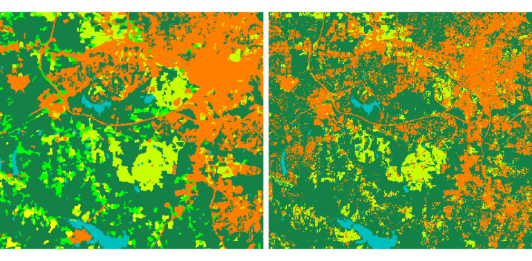

Two ensemble strategies are supported through the ensemble_type option:
Both strategies work for classification and for regression, as long as every base model in the configuration is of the same kind (all classifiers or all regressors). Note that soft voting requires classifiers that support probability predictions (predict_proba), ideally with well-calibrated probabilities.
Write a configuration template. The module writes a JSON file, filled with each estimator's scikit-learn default values, and exits. It holds two kinds of entry, kept separate:
Give the output path with write_config:
sh r.learn.assembly models=RandomForestClassifier,SVC,KNeighborsClassifier \ write_config=ensemble.json
Edit and run, adjust the parameters and (for voting) the weights in ensemble.json, then pass it back with the config option together with the training data and the shared settings:
sh r.learn.assembly config=ensemble.json group=predictors \ training_points=training_pts field=class ensemble_type=stacking \ cv=5 inner_cv=5 save_model=ensemble.gz
The configuration file (see below) is what drives the ensemble and gives it its flexibility. A benefit of the two-step approach is that the template already lists each estimator’s parameters, so you do not have to remember or look up which ones belong to the selected model.
{
"rf": {"estimator": "RandomForestClassifier", "weight": 2.0,
"params": {"n_estimators": 500, "max_features": "sqrt"}},
"svc": {"estimator": "SVC", "weight": 1.0,
"params": {"C": 10.0, "kernel": "rbf"}},
"knn": {"estimator": "KNeighborsClassifier", "weight": 1.0,
"params": {"n_neighbors": 7}},
"final_estimator": {"estimator": "LogisticRegression",
"params": {"C": 0.1, "max_iter": 500}}
}
Parameters that are not listed keep the estimator's default, while parameters that are not valid for an estimator are ignored with a warning. The weight field is used only for voting ensembles and ignored for stacking. The final_estimator entry is used only for stacking and ignored for voting; when it is absent, the meta-model falls back to the final_estimator module option.
The meta-model must be of the same kind (classifier or regressor) as the base models. The available meta-models are LogisticRegression, LogisticRegressionCV and RandomForestClassifier for classification, and RidgeCV, LinearRegression and RandomForestRegressor for regression. Note that RidgeCV and LogisticRegressionCV tune their own regularization internally. The seed (random_state) and the number of cores (nprocs) are taken from the module options and should not be set in the file.
When a group_raster is provided by the user, samples sharing a group id are kept together in the same cross-validation fold. This allows for spatial cross-validation, which provides a more robust estimate of the predictive performance of the (ensemble) model. Note that grouping is applied only to the outer cross-validation (cv). The internal stacking cross-validation (inner_cv) does not currently keep groups together, so the meta-model is trained on out-of-fold predictions that may share spatial groups across folds.
The configuration makes this easy: the same estimator can appear several times under different keys, each independently editable. On the command line, list it more than once in the models option, and the template writes a separate entry for each, suffixing repeats to keep the keys unique (for example GradientBoostingClassifier and GradientBoostingClassifier_2). In the GUI an estimator can be selected only once, so add further copies by duplicating its entry in the JSON under a new key. Either way, a library of varied configurations lives in a single file:
r.learn.assembly \
models=GradientBoostingClassifier,GradientBoostingClassifier,RandomForestClassifier \
write_config=ensemble.json
For tuning the meta-model itself, select one of the self-tuning options, RidgeCV (the regression default) and LogisticRegressionCV. They select their own regularization strength internally by cross-validation. Their candidate grid and number of folds are set through the final_estimator params, for example Cs and cv for LogisticRegressionCV, or alphas for RidgeCV. To explore how a single estimator behaves on its own, r.learn.train can still be used, but selecting its hyperparameters on the full dataset and then reusing those samples in the ensemble biases the reported performance, so a fixed library is preferred here.
r.learn.predict can output class probabilities, which requires the model to provide predict_proba. Hard voting does not, so use soft voting or stacking if probability output is needed.
The -b flag balances imbalanced classes by weighting samples inversely to their class frequencies (classification only). The weights are passed to every base model during fitting, so it can only be used when all base models support sample weights. The module checks this and reports any that do not. Estimators such as KNeighborsClassifier, LinearDiscriminantAnalysis, QuadraticDiscriminantAnalysis and MLPClassifier do not support sample weights.
The -f flag computes permutation feature importances of the fitted ensemble, saved to fimp_file and usable by r.learn.report. As in r.learn.train, importances are computed on the training data (not an independent validation set) using the tuning score (Matthews correlation coefficient for classification, R-squared for regression), so they describe how the model uses each predictor rather than how it generalizes.
Note that this example must be run in the "landsat" mapset of the North Carolina sample data set location.
First, we are going to generate some training pixels from an older (1996) land cover classification.
g.region raster=landclass96 -p r.random -s input=landclass96 npoints=5000 raster=training_pixels
Then we can use these training points to perform a classification on the more recently obtained landsat 7 image. By default, this will use the stacking ensembly method.
# 1. write a template for the chosen base models
r.learn.assembly models=RandomForestClassifier,SVC,KNeighborsClassifier \
write_config=ensemble.json
# 2. (edit ensemble.json), then train with 5-fold outer cross-validation
r.learn.assembly config=ensemble.json group=lsat7_2000 \
training_map=training_pixels ensemble_type=stacking \
cv=5 inner_cv=5 classif_file=report.csv save_model=ensemble.gz
# 3. apply the fitted ensemble to the rasters
r.learn.predict group=lsat7_2000 load_model=ensemble.gz output=classification
r.colors map=classification raster=landclass96
The original map (left) and the prediction map (right) are shown below:

The same configuration can be reused for a voting ensemble; only the options change. The base models and their weights in ensemble.json are shared, and the final_estimator entry is ignored for voting. Here we reuse it for soft voting, standardizing the predictors first with the -s flag (edit the weight fields in ensemble.json to give some models more say in the vote):
# reuse ensemble.json, now as a soft-voting ensemble
r.learn.assembly config=ensemble.json group=lsat7_2000 \
training_map=training_pixels ensemble_type=voting voting=soft \
cv=5 save_model=ensemble_voting.gz -s
r.learn.predict group=lsat7_2000 load_model=ensemble_voting.gz \
output=classification_voting
r.colors map=classification_voting raster=landclass96
Pedregosa, F., Varoquaux, G., Gramfort, A., Michel, V., Thirion, B., Grisel, O., Blondel, M., Prettenhofer, P., Weiss, R., Dubourg, V., Vanderplas, J., Passos, A., Cournapeau, D., Brucher, M., Perrot, M., & Duchesnay, É. (2011). Scikit-learn: Machine Learning in Python. Journal of Machine Learning Research, 12(Oct), 2825–2830.
scikit-learn documentation on ensemble methods.
Built on the r.learn.ml2 toolset by Steven Pawley.